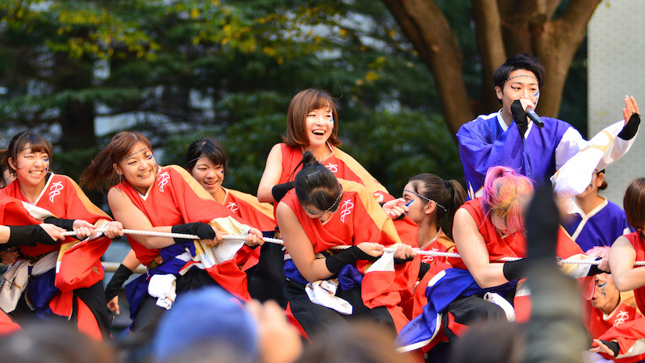

早稲田キャンパス・戸山キャンパスの各号館内の教室で行われる企画です。例年、音楽イベントや講演会、学術発表や体験型企画など、多岐にわたる企画が行われます。さまざまな文化発信ができる自由度の高さが魅力です。
大隈講堂・小野記念講堂にて行われる企画です。広いステージだけでなく、音響・照明設備やひな壇、ピアノを利用できることが、何よりの魅力です。例年、音楽イベントや講演会などが催されています。講堂という晴れ舞台で、日ごろの活動を発表してみませんか？
早稲田キャンパス・戸山キャンパスの、開けた屋内スペースを利用した展示企画です。企画スペースに常駐しなくても良いので、早稲田祭2017当日に参加できない方にもおすすめです。毎年、絵画や写真・模型・彫刻などさまざまな作品展示や、フリーペーパーなどの出版物の頒布が行われます。みなさんのつくった作品を、大勢の来場者が見る絶好の機会です。
早稲田キャンパス・戸山キャンパスの屋外スペースで行われる企画です。例年、ストリートパフォーマンスや出版物の販売、フリーマーケット、来場者参加型企画など、さまざまな企画が行われています。自由度の高い文化発表ができるだけでなく、両日／単日参加に加えて短時間の企画枠も設置しているので、気軽に参加できるのも魅力です。

早稲田キャンパス・戸山キャンパスに設置されるステージで行われる企画です。キャンパス内の広大なスペースを利用し、大勢の来場者に向けた文化発表を行うことができます。また、スピーカーなどの音響機材を使用した大音量でのパフォーマンスも可能です。昨年度は、ダンスや演芸などさまざまなジャンルの企画が行われました。

早稲田キャンパス・戸山キャンパスの屋内外スペースで飲食物を販売する企画です。例年、スポーツ系や食品系など、多様なジャンルのサークル・ゼミなどの参加でにぎわいます。数ある企画枠のうち、飲食物を販売することができる唯一の企画です。
※飲食物販売企画は、説明会形式で参加受付を行いますので、ご注意ください。
早稲田大学の象徴ともいえる大隈講堂の前に設置されるステージを使って行われる企画です。他の企画にはない映像・音響・照明による演出や、広大な観覧スペースが魅力です。数千人規模の来場者に向けた文化発表を行うことができ、圧巻のスケールを誇ります。
早稲田演劇振興の拠点として再建された、早稲田小劇場どらま館にて行われる企画です。専用の音響・照明などの舞台設備を利用して、演劇やお笑いをはじめとしたさまざまな文化発表を行うことができます。日本屈指の小劇場で、早稲田祭2018限定の公演をしてみませんか？
※ドラマ館企画の募集は他の企画と募集期間が異なります。参加をご検討の方は、santaidoramakan@wasedasai.netまでお問い合わせください。

【日時・場所】
11月4日(日) 9:20-9:40 早稲田キャンパス10号館前ステージ
早稲田祭2018の2日目の朝に11号館前ステージで行われるパフォーマンス企画です。参加団体・参加者と共に1日目の疲れを吹き飛ばし、2日目開幕前のキャンパスを、早稲田祭色に染め直しましょう！
【日時・場所】
10月29日(月) 戸山カフェテリアインナースペース
10月30日(火)、10月31日(水) 早稲田キャンパス3号館前
早稲田祭2018直前期の昼休みに、早大生と共に早稲田祭へのモチベーションを上げる企画です。早稲田祭はすぐそこ！ 一足早く、キャンパスを盛り上げてみませんか？
【日時・場所】
11月4日(土) 10:00~10:25 大隈講堂前ステージ
早稲田祭2018の1番最初の企画です。
圧巻のパフォーマンスで祭の幕開けを華々しく宣言します！ 熱い演技で熱い祭を一緒に創り上げましょう！
【日時・場所】
11月5日(日)16:50~17:25 大隈講堂前ステージ
早稲田祭2018の最後を締めくくる企画です。最後まで熱く、また祭への儚さを演出します。感動のフィナーレを共に彩りましょう！
【日時・場所】
11月2日(金) 夕方 大隈講堂
早稲田祭2018を翌日に控え、たくさんの人々が期待に胸を膨らませているとき。そんな早稲田祭前夜に1000人もの人が大隈講堂で一堂に会し、翌日への期待感を最高潮まで高めます！ 早稲田祭に対するあなたの熱い想い、前夜祭で爆発させてみませんか？

【日時・場所】
11月3日(土) 夕方 早稲田大学周辺地域
パレードの始まりを告げるスタートコンテンツ、早稲田でしかできないパレード、そして最後のゴールコンテンツで早稲田を祭色に染め上げてみませんか？
※企画が行われる日時・場所については、変更の可能性がありますのでご注意ください。